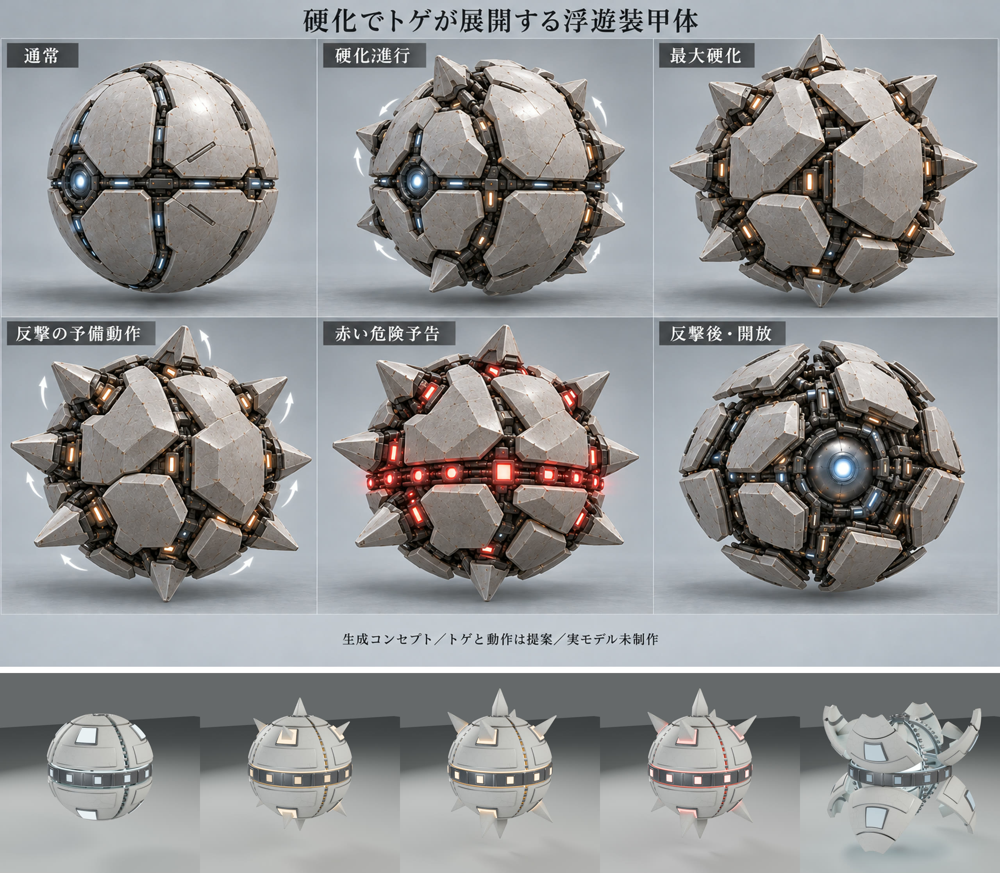
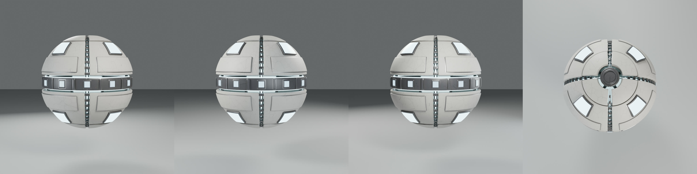
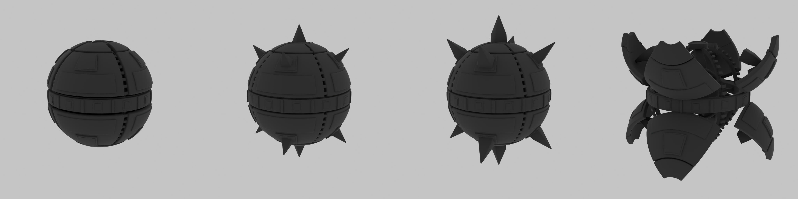
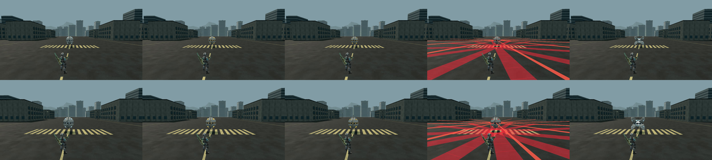
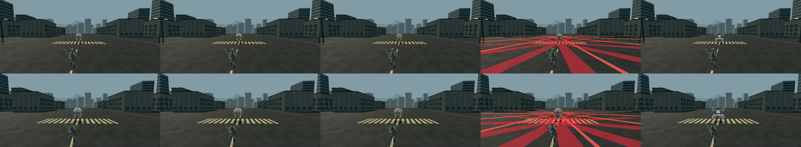

ローカル候補（未merge・未公開）。仕様と仮値は docs/BASTION.md。コンセプトは画像生成による別担当の絵コンテで、実モデルの成果ではない。master は Blender 5.2.1 の実モデルを同じカメラ・照明で描いた実レンダー、実ゲーム視点は軽量GLBをゲームの Renderer・肩越しカメラで描いた画面、動画は実 step() を1/30秒ずつ進めた固定30fpsの録画。





各動画の時刻別フレーム一覧は motion-*-sheet.jpg、状態の時系列は capture-log.json、協力（実ローカルWorker・2クライアント）の結果は network.json。
| 項目 | コンセプト | 実モデル v1 |
|---|---|---|
| 輪郭・比率 | ほぼ真球。v4 は硬化で角張った塊状の装甲へ変形 | 真球。硬化は装甲の変形ではなく、トゲの展開と継ぎ目の密着で表す（有限の部品を動かす方針）。塊状の装甲変形は再現していない |
| 装甲の分割 | v1：上下4枚の曲面。v4：多数の多角形プレート | 上下各4枚＋極側の冠パネル＋赤道帯。v4 の細かい多角形分割は採用せず |
| 接合部 | 暗い機械的な関節が継ぎ目に連なり、間から光が漏れる | 継ぎ目に暗い関節リンクを連ね（master 7度間隔、ゲーム版14度間隔）、リンクの間から継ぎ目の光が漏れる。子午線リブ・トゲの受け座も暗い金属。v4 ほど密な機械の詰まりはない |
| 厚み | 厚い装甲 | 8.5cmの殻＋面取り、冠パネルは一段厚い。開放時に断面の厚みが見える |
| 材質 | 灰白の乾いた石・陶器状、細かなひび、茶色の斑点 | 灰白の塗装＋細かなひび・錆の斑点・縁の欠けと露出金属・凹部の汚れ（master）。ゲーム版は1024の焼き込みでひびが粗くなる |
| トゲ | v4：太い楔状のトゲが段階的にせり出す | 10本（装甲8＋極2）。段階ごとに1/3→2/3→全展開、最大0.5m。受け座が硬化の色で光る |
| 赤い予告 | 赤道の発射口列が赤く光る | 同じ（発射口12個）。ゲームでは実弾と同じレーンの地面の危険帯と弾道の芯線を追加 |
| 開放 | 装甲が外れてコアが露出 | 8枚が蝶番で外へ70度開き、正面の2枚が左右へ分かれて発光コアが見える |